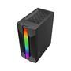
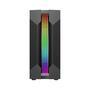
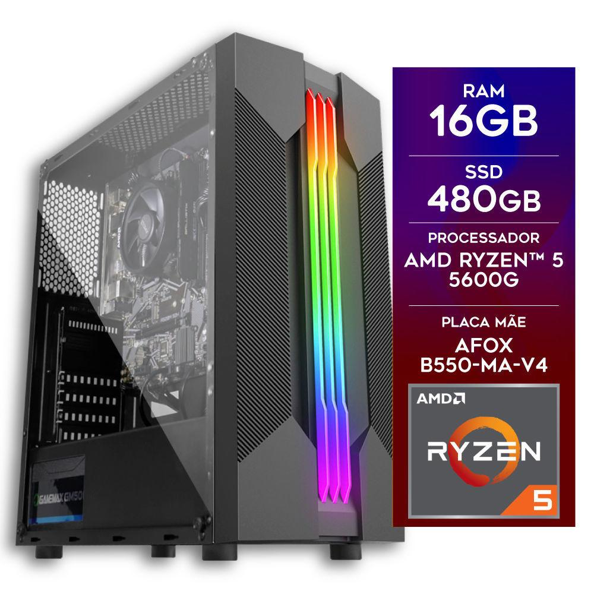

R$ 2.074,74
À vista no pix com até 7% off
R$ 2.230,90
Em até 10x de R$ 223,09 sem juros no cartão
Ou em 1x no cartão com até 7% OFF
Escolha o seu próximo dispositivo digital!
À vista no pix com até 7% off
R$ 2.230,90
Em até 10x de R$ 223,09 sem juros no cartão
Ou em 1x no cartão com até 7% OFF
tenha em mãos um pc gamer de alta performance e qualidade que vai fazer você sair na frente em seus jogos! O pc gamer certox stream é um incrível equipamento que
vem equipado com o poderoso processador amd ryzen 5 5600g com 6 núcleos e 12 threads, que oferece desempenho incrível para jogos, edição de vídeo e tarefas exigentes,
junto com a placa mãe afox b550-ma-v4, memória ram ddr4 de 3200mhz, placa de vídeo amd radeon vega 7 (integrada) e ainda conta com fonte de alimentação de 500w
reais com 80 plus e pfc ativo, garantindo um fornecimento de energia estável e confiável. O microcomputador gamer certox stream é um pc gamer montado para
proporcionar um excelente desempenho e estabilidade, e uma experiência de jogo suave e sem interrupções.
- modelo: gamer
- marca: certox
- modelo: stream 1031